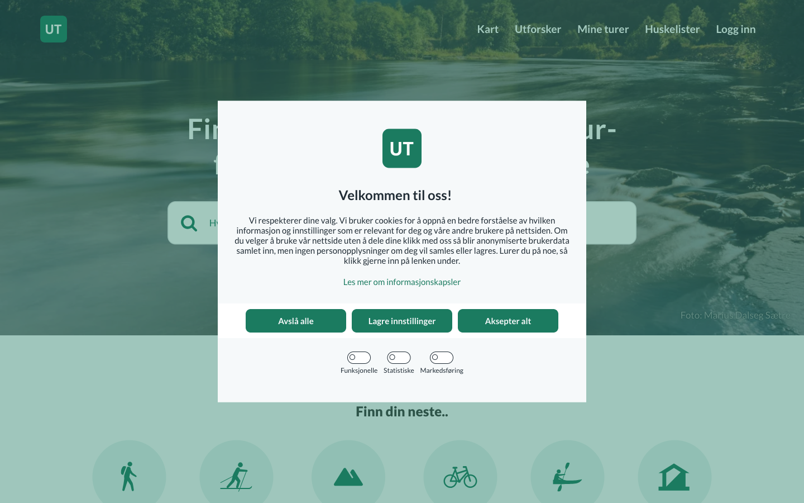
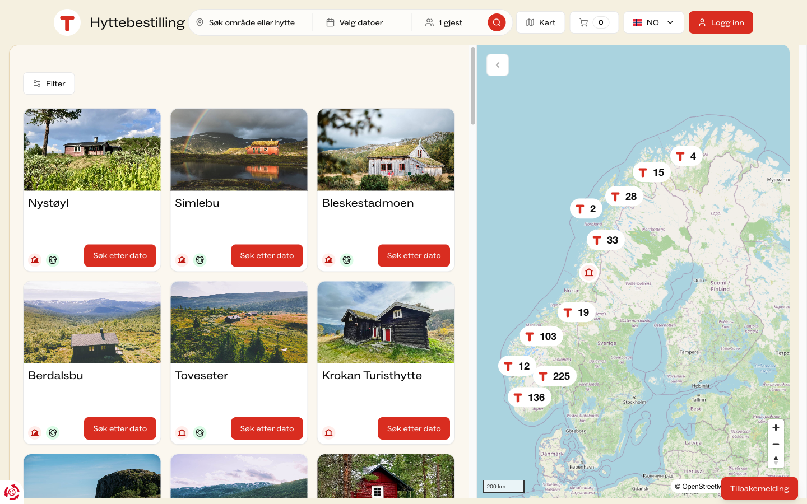
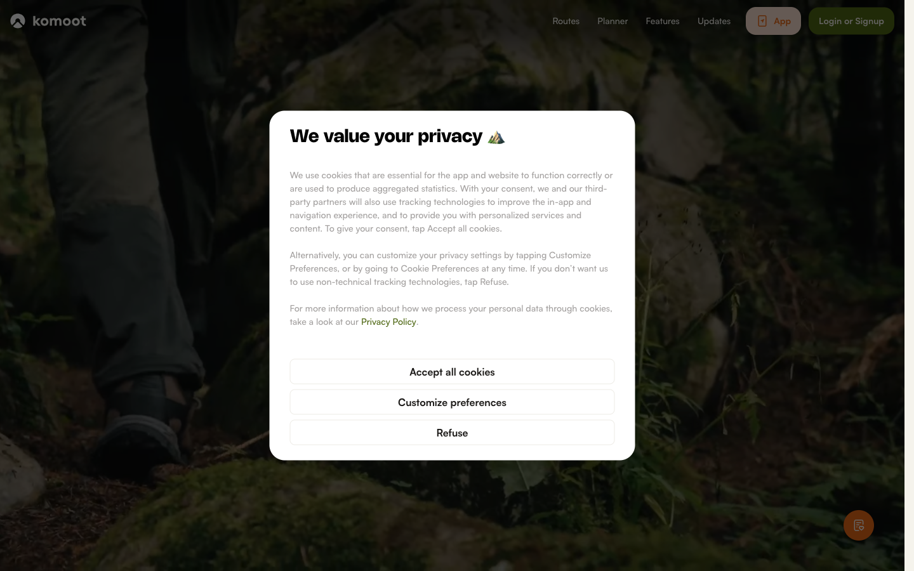
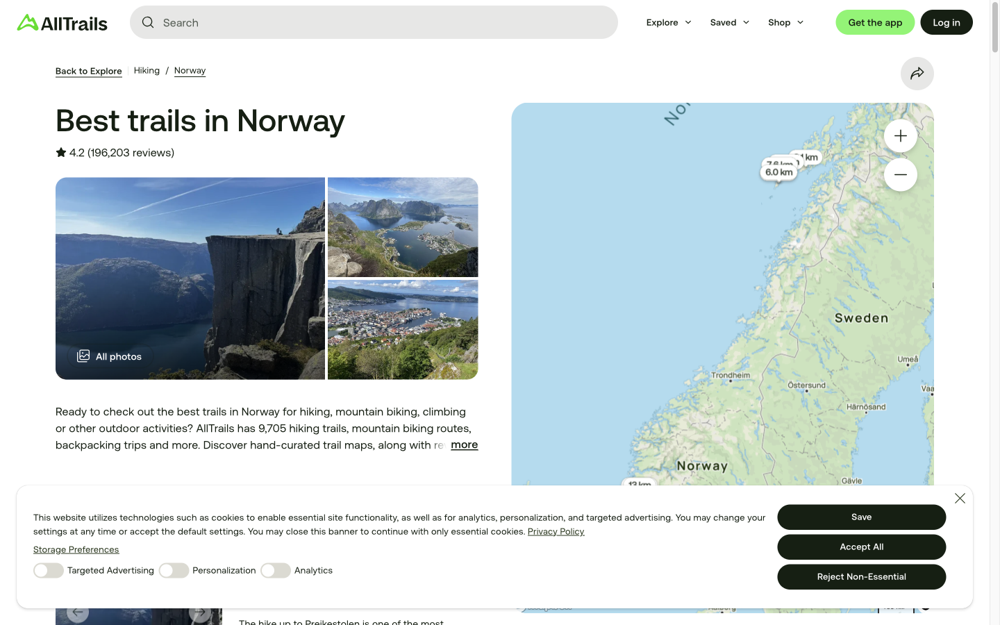
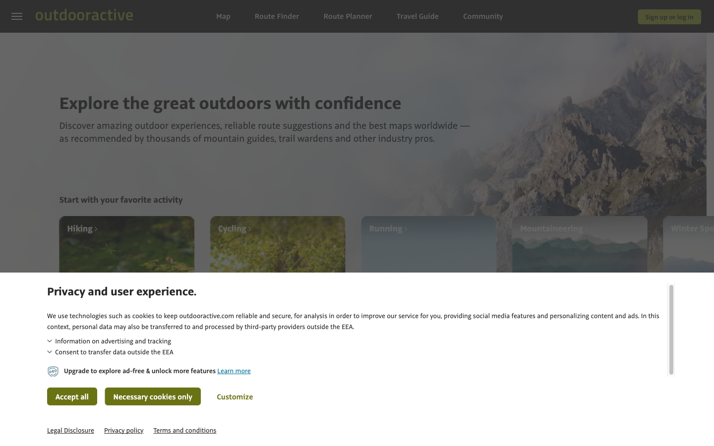

Nestwood — склади персоналізований план походу: маршрут, ночівля, спорядження й погода в одному місці
Сьогодні це доводиться збирати руками з трьох-чотирьох застосунків. Ти вказуєш свою фізичну форму, бюджет і час — Nestwood віддає готовий багатоденний маршрут із хижами чи кемпінгами, списком спорядження й погодою на кожен день. Усе на офіційних відкритих даних Норвегії та Швеції — карти Kartverket і Lantmäteriet, погода met.no і SMHI, транспорт Entur, лавини NVE — не на вигаданому AI-маршруті.
Навіть найкращий варіант сьогодні змушує тебе самому зводити похід руками: маршрут в одному застосунку, ночівля в другому, погода в третьому, спорядження — з голови. Ми перевірили 15 продуктів — жоден не збирає це в один план, який врахував саме тебе. В Альпах офіційну наявність місць уже вшили в турпортал, але й там це пошук по готових маршрутах, не генерація. У Скандинавії немає навіть цього.
Про продукт
Самарі пітчу. Google Maps, Komoot і AllTrails уже запустили AI-фічі для планування маршруту, і дещо більше за один день вони вміють (Komoot автоматично ділить маршрут на етапи й пропонує житло; AllTrails-in-Claude генерує multi-day itineraries з packing lists). Але жоден не є генеративним і водночас привʼязаним до офіційних даних про ночівлю з адаптацією по кожному дню. Формулюємо це точно, бо в Альпах половина задачі вже вирішена — див. блок «Альпи» в розділі 2: патерн доведений і за нього платять, але генеративного шару немає ніде, а Скандинавія не має навіть базової інтеграції. Це слабше за новизною й значно сильніше за доказом здійсненності. Ти вказуєш фізичну форму, бюджет, час і спорядження — Nestwood віддає готовий персоналізований маршрут на кілька днів: дні переходу, прив'язані ночівлі на офіційній інфраструктурі, список спорядження й погоду на кожен день.
Бізнес-модель. Це не окремий стартап — готова фіча, яку може підключити гравець із власною аудиторією: AllTrails, Komoot, Google Geospatial AI team або сама DNT/UT.no.
Як ми вирішимо цей біль
- Ми не намагаємось замінити DNT чи STF. Nestwood підключається до того, що вже офіційно існує — маршрути Kartverket/Lantmäteriet, хижі DNT/UT.no — і збирає це в один план. Так само вже зробив Outdooractive, підключивши свою платформу до альпійських клубів: це перевірений шлях, не гіпотеза. Але той самий приклад означає, що Outdooractive — і наш найближчий конкурент, тож відповідь на «чому не вони» має бути готова заздалегідь — вона в розділі 2. Для живої інтеграції з операційними даними хиж знадобиться домовленість із DNT — це комерційна розмова майбутньої фази, не технічний блокер, і покупцеві з дистрибуцією вона дістається легше, ніж нам.
- Кожне рішення в плані видно й пояснено. Чому саме ця хижа на третій день? Бо стільки кілометрів ти проходиш за день при своїй формі, і завтра обіцяють дощ. Якщо одне з офіційних джерел даних тимчасово недоступне, план не ламається — він чесно показує, чого не вистачає.
- Ти відповідаєш на кілька зрозумілих питань — і відразу отримуєш готовий план. Ніякого «сподіваюсь, чат-бот усе правильно зрозумів» там, де від відповіді залежить, де ти спатимеш. Передбачуваність тут важливіша, ніж виглядати «ще більш AI». А коли план уже є — його можна доуточнити словами: «зроби третій день коротшим», «потрібна хижа з душем». Розмовний шар працює поверх готового плану, тому лишається керованим.
Деталі й обґрунтування кожного пункту — розділи 3 (Бенчмарк) і 4 (Патерни) нижче.
Джерела даних
Продукт обіцяє звести маршрут, ночівлю, погоду й дорогу в один план — отже мусить мати джерело під кожним із них. Кожне перевірене живим запитом до самого API, не читанням документації: тим самим методом, яким ми виявили, що відкритий API DNT більше не існує.
| Що потрібно | Норвегія | Швеція | Стан |
|---|---|---|---|
| Маршрути й рельєф | Kartverket · CC BY 4.0 ✓ | Lantmäteriet · CC0 ✓ | Відкрито; ©Kartverket — обов'язкова атрибуція |
| Стежки з офіційною градацією | Turrutebasen · «no restrictions», живий WFS ✓ | Naturvårdsverket, Lantmäteriet ✓ | Відкрито — і градація тут поле, а не наша вигадка |
| Погода | met.no · CC BY 4.0 · без ключа ✓ | SMHI snow1g · CC BY 4.0 SE ✓ | Відкрито в обох країнах |
| Транспорт до трейлхеда | Entur · NLOD · без ключа ✓ | ResRobot (CC0) + Trafikverket (CC0) ✓ | Відкрито; ключ потрібен лише в Швеції |
| Дорожній доступ до станції | NVDB · NLOD · без автентифікації ✓ | Lantmäteriet CC0, але bulk + акаунт ✓ | Норвегія — прямо, Швеція — дорожче |
| Лавинна небезпека | NVE Varsom · NLOD ✓ | lavinprognoser.se · CC0, 6 районів ✓ | Відкрито; шведське покриття часткове |
| Наявність ліжок | DNT / NTB закрито | STF закрито | Потрібна угода — комерційна розмова, не технічний блокер |
| Покриття мобільного зв'язку | Nkom — XLSX по домогосподарствах немає шару | PTS — Excel по комунах немає шару | Придатних геоданих немає в жодній країні |
Ліцензії перевірені на сторінках власників даних; доступність — прямими запитами 06.08.2026. Повні цитати умов і результати запитів — research.md, розділ «Решта джерел під продуктом».
Станція, через яку люди пропускали похід, — і те, що ми про неї знаємо з відкритих даних
Шведські хайкери описали конкретний провал: потяг завернув раніше, пасажирів направили на замінний автобус — а до станції Katterat немає дороги, тож автобус фізично неможливий. Ми перевірили, чи можна дізнатися це заздалегідь із відкритих джерел.
- Katterat є в Entur як NSR:StopPlace:58610, із полями cancellation, aimedDepartureTime і expectedDepartureTime — тобто «сигнал, поки альтернатива ще існує» будується прямо на них.
- У дорожній базі NVDB навколо Katterat — нуль дорожніх сегментів. Навколо сусідньої Bjørnfjell на тій самій лінії — п'ятнадцять, з них десять європейської категорії.
Тобто «сюди можна дійти, але звідси не можна виїхати автобусом» — обчислюване поле, без ключа й без домовленостей. Це те, чого не показує жоден планувальник маршрутів у категорії.
Чесний нюанс: на Katterat realtime: false — там є розклад, а не живий потік (на Oslo S — true). Скасування «за три години до відправлення» саме тут доведеться брати з національного джерела відхилень, а не з планувальника.
Офіційна градація складності — поле у відкритих даних, і воно заповнене нерівно
DNT публічно просить зберігати єдину національну градацію й не вигадувати альтернативних шкал. Це не лише сумісно з нашими даними — це ними й реалізується: у національній базі стежок gradering є полем зі значеннями за стандартом Merkehåndboka. Але заповнене воно вибірково, і це виміряно, а не припущено:
| Район | Фотрут із заповненою градацією | Що це означає для продукту |
|---|---|---|
| Jotunheimen | 1/92 | Стан «не градуйовано» — не edge-case, а типовий випадок. Показуємо офіційну, коли вона є; не вигадуємо свою, коли її немає. |
| Hardangervidda | 28/59 | |
| Narvik – Abisko | 64/137 |
Джерела рухаються, і частіше, ніж здається. За один аудит знайшлося два вимкнені API та одна нова обов'язкова вимога: шведський прогнозний pmp3g вимкнено 31 березня 2026 (усі шляхи віддають 404, включно з коренем), норвезький NVDB v3 виводиться з експлуатації й відмовляє новим клієнтам, а NVDB v4 з 5 січня 2026 вимагає ідентифікуючий заголовок.
Наслідок практичний: multi-provider fallback потрібен не для краси архітектури, а тому що частота змін задокументована. І окремо для пітчу — будь-який приклад інтеграції зі шведською погодою, старший за квітень 2026, сьогодні не працює.
Що з цього лишається заблокованим
Рівно два класи. Перший — жива наявність ліжок: закритий API DNT, і це комерційна розмова, яку покупець із дистрибуцією веде легше за нас. Другий — геопросторове покриття мобільного зв'язку: обидва регулятори публікують лише статистику по домогосподарствах і комунах, а нам потрібне покриття на перевалі. Тут продукт мусить казати «невідомо, перевірте в оператора» — і саме так це спроєктовано.
Іронія варта того, щоб назвати її першими: DNT радить хайкерам перевіряти покриття по маршруту, а даних, щоб зробити це програмно, у відкритому доступі немає в жодній із двох країн.
Конкуренти
15 продуктів у трьох групах — Хард (той самий продукт, ринок Скандинавія), Софт (інший продукт, той самий job-to-be-done) і Аспіраційні (міжнародні еталони категорії). Повний розбір по кожному — competitors.md.
| Продукт | Ринок | Про що він | AI-інтеграція — як виглядає і що робить |
|---|---|---|---|
| Хард — той самий продукт, ринок Скандинавія | |||
| UT.no (DNT) | Скандинавія | Пошук маршруту + хижі DNT — держ./асоціаційний сайт-планувальник. | Немає |
| STF | Скандинавія | Мережа гірських хиж на Kungsleden + трекінг. | Немає |
| Komoot | Скандинавія | Route-планувальник (піші/вело/біг). | Так — застосунок для ChatGPT рекомендує маршрут із бази 7М маршрутів, не генерує; окремо Premium Multi-Day Planner автоматично ділить маршрут на етапи й пропонує житло в кінці кожного (rule-based, не AI, без офіційних hut-даних). |
| AllTrails | Скандинавія | Пошук і навігація трейлів, community-каталог. | Так — Smart Routes (тар Peak, $79.99/рік): редагує один трек на один день; окремо AllTrails-in-Claude (з квітня 2026) генерує multi-day national-park itineraries + packing lists у діалозі — без ночівлі й офіційних hut-даних. |
| Outdooractive | Скандинавія | Hut-to-hut multi-day route-планувальник, 33 000+ хиж. | Так — White-label AI Assistant, вбудований на сайтах дестинацій-партнерів (напр. Heidiland Tourismus): за описом Outdooractive, відповідає на inspiration-питання про дестинацію; сама компанія називає його "highly personalized" у власному прес-релізі — незалежного підтвердження цього не знайдено. |
| Софт — інший продукт, та сама базова задача | |||
| Gaia GPS | США | Backcountry-навігація й трек-планування в полі. | Немає |
| PiNCAMP | Швейцарія/Німеччина/Нідерланди | Маркетплейс бронювання кемпінгів (Європа). | Немає |
| WikiCamps | Австралія/Нова Зеландія | Кемпінг-трипланер з бронюванням сайтів. | Немає |
| Wanderlog | США | Загальний трипланер для будь-якого типу подорожі. | Так — генеративний AI-шар над картою: будує itinerary з опису подорожі, але визнаний "менш конкретним" за конкурентів (generic-рекомендації, без вузького grounding). |
| PackPoint | США | Gear-checklist під погоду й тип активності. | Немає — правило-based логіка (погода + тривалість + профіль активності), не AI. |
| Аспіраційні — міжнародні еталони категорії | |||
| onX Backcountry | США | Premium route-builder з 3D-рельєфом і waypoints. | Немає |
| FarOut | США міжнар. покриття не підтверджено | Waypoint-гайди для thru-hiking / бекпекінгу. | Немає |
| DOC Great Walks | Нова Зеландія | Держ. система бронювання хиж/треків. | Немає |
| YAMAP | Японія | Соціальний хайкінг-застосунок з офлайн-GPS. | Немає |
| Google Gemini / Travel Concierge | США | AI travel-агент з grounding на Maps Platform. | Так — це і є продукт: розмовний multi-agent, groundить відповіді через Places API + Search Grounding + MCP-сервер, реагує на "живі" зміни (погода, дорожні умови). |
"Ринок" — де продукт реально конкурує за нашого користувача, не де зареєстрована компанія (тому в Хард-групі всі пʼять — Скандинавія, хоча Komoot/AllTrails/Outdooractive — глобальні продукти). Джерела по кожному продукту — competitors.md. "AI-інтеграція" тут — conversational/generative AI-шар, не rule-based фільтри чи анкети.
UX-матриця пʼятьох Хард-конкурентів (Крок 4)
| Ось | UT.no (DNT) | STF | Komoot | AllTrails | Outdooractive |
|---|---|---|---|---|---|
| Аудиторія | Норвезькі трекери всіх рівнів; сильний національний бренд-звʼязок (DNT-членство). | Шведські трекери, історично орієнтовані на гірські станції Лапландії (Kungsleden); теж membership-модель. | Глобальна аудиторія піших/вело/бігових маршрутів; Nordic — велика органічна підгрупа. | Наймасовіша аудиторія з усіх пʼяти. | Європейська Alps-first аудиторія, поширюється на Скандинавію через партнерства/білейбл. |
| Основа продукту | Держ./асоціаційна база маршрутів + хиж — DNT сам володіє хижами. | Нац. мережа ~250 обʼєктів (не лише 16 хиж на Kungsleden — це підмножина на одному трейлі). | Community-генерований route-граф (7М маршрутів) — не володіє інфраструктурою ночівлі. | Community-review трейл-каталог — не володіє інфраструктурою. | Ліцензована B2B2C платформа (33 000+ хиж) — продає технологію, не володіє хижами. |
| Ключовий механізм | Планування на карті → окремий перехід у booking-домен — два різні застосунки, вручну зшиті користувачем; онлайн-бронювання охоплює вже 530+ хиж. | Info-сторінки + окремий booking-модуль; ще менш інтегровано, ніж DNT. | Автоматичне розбиття на multi-day stages + пропозиція житла в кінці кожного (Premium) — rule-based, без офіційних hut-даних. | Smart Routes редагує один трек на один день; окремо AllTrails-in-Claude генерує multi-day itineraries + packing lists. | Hut finder з transitions between huts і weather-at-hut — єдиний, хто моделює "маршрут↔хижа", але як фільтр, не агент. |
| Довіра | Максимальна: держ./асоціаційний бренд, дані з першоджерела. | Не однорідна, і складніше, ніж здавалось: fjällstugor бронюються, і бронь + прихід до 18:00 дають гарантоване ліжко; без броні або пізніше — місце під дахом є, але «неспецифіковане», можливо матрац. Нікого не виганяють — це закладений принцип. fjällstationer бронюються, без броні місце не гарантується. Тобто гарантія = тип обʼєкта × є бронь × час приходу × членство. | Community-довіра, не інституційна. | Найслабша інституційна довіра: публічна критика канадських SAR-фахівців за "надмірну довіру" до Smart Routes — конкретна фахова спільнота, не універсальний консенсус. | B2B-довіра; кінцевий користувач бачить чужий бренд (alpenvereinaktiv), не "Outdooractive". |
| Монетизація | Непряма — DNT-членство, UT.no безкоштовна. | Аналогічно — STF-членство зі знижками. | Freemium + Premium-підписка. | Freemium + Peak-підписка ($79.99/рік) за AI-фічі. | B2B SaaS/лейбл-контракти — дані не підтверджені |
Джерела для кожного твердження — benchmark.md; скріни живого обходу нижче.
Альпи: половина цієї задачі вже вирішена — і за неї платять
Це найважливіше уточнення нашої головної тези, і краще знати його до того, як його назве покупець.
- Чотири альпійські клуби (DAV, ÖAV, SAC, AVS) ведуть спільну систему бронювання Hut Reservation: 500+ хиж, ~1,5 млн бронювань на рік.
- Її календар наявності вбудований прямо в турпортал alpenvereinaktiv.com — не окремим сайтом.
- Інструмент Bettencheck показує вільні місця одразу по всьому багатоденному маршруту на вибрану дату старту.
- А сам портал працює на white-label технології Outdooractive — тобто на тому самому прецеденті, який ми наводимо як зразок власної бізнес-моделі.
Що це змінює. Не можна казати «ніхто не поєднує AI з офіційними даними про хижі» — у формі «ніхто ніде» це не витримає першого питання. Витримує вужча й перевірювана: Bettencheck — це пошук по наперед визначених маршрутах, а не генерація. Він не знає ні твоєї фізичної форми, ні погоди, ні спорядження. Тому незайнятим лишається саме те, що робимо ми — генеративне планування поверх офіційних даних — і ще ціла Скандинавія, де немає навіть альпійської базової інтеграції.
Для пітчу це вигідніший розмін: замість «повірте, такого ще не робили» — «патерн доведений, за нього платять мільйон із половиною бронювань на рік, а ось регіон і шар, яких немає».
Відповідь на «чому не Outdooractive?»
Питання прозвучить першим, тому ось коротко. Outdooractive уже в Скандинавії — партнерство з Visit Group як постачальник карт і роутингу, клієнти в Данії, Швеції й особливо Норвегії, референс — норвезька дестинація Geilo. Але це технологія для дестинацій і туристичних офісів, не для бронювання хиж, і жодного звʼязку Outdooractive ↔ DNT немає. А DNT будує ut.no сам, зі своєю інженерною командою — альпійський клуб віддав портал підряднику, DNT радше не віддасть. Тому реальний ризик інший: DNT зробить це сам. Звідси й різні входи:
- DNT/UT.no
- «У вас є все, крім генеративного шару й багатомовного guidance — про потребу в якому ви сказали самі». Це пітч про швидкість.
- AllTrails / Komoot
- «Hut-логістика Скандинавії — рів, який не будується з community-даних. Ось вона, вже зібрана».
- «Конкретний вертикальний кейс для вашого ж патерну grounding».
Три спільні патерни ринку
Генеративного шару над офіційними даними про ночівлю немає ні в кого
Komoot зшиває маршрут+етапи+generic-житло (rule-based, без офіційних даних про хижі). А в Альпах офіційна наявність місць уже вшита в турпортал — див. блок «Альпи» нижче. Тобто розрив не «інтеграції нема», а «немає генеративної, і немає в Скандинавії».
Довіра будується на джерелі даних, а не на AI
Де AI з'являється (AllTrails), це викликає підозру в конкретній фаховій спільноті (канадські SAR), не інституційну довіру взагалі.
Монетизація завжди відв'язана від AI-шару
Підписка продається за карти/офлайн/фічі або за B2B-ліцензію — пропозиції "AI, що спланує трип" з ціною ще не існує.
Три відмінності
Хто володіє нічлігом
DNT/STF — напряму; Komoot/AllTrails — ніхто; Outdooractive — посередник-технологія.
Ступінь інтеграції маршрут↔ночівля
Від двох окремих застосунків (DNT/STF) до rule-based generic-житла в одному застосунку (Komoot) до multi-day без ночівлі (AllTrails) до фільтра-не-агента (Outdooractive).
Модель монетизації
B2C-підписка vs. B2C-членство зі знижкою vs. B2B2C-ліцензування — три структурно різні моделі в одній категорії.
Скріни живого обходу — 2026-08-05
Жоден екран не був за логіном; фінальний крок бронювання хижі (DNT/STF) не перевірявся — доступ обмежений, тестового акаунта немає.












Бенчмарк
Deep-dive benchmark інтеграційного шару (Крок 5) — не outdoor-специфіка, а сам вимір "звести розрізнені джерела в одне рішення", на 5 продуктах поза категорією. Повні критерії й джерела — benchmark.md.
| Продукт | Категорія | Що зводить в один потік |
|---|---|---|
| Monarch Money | Особисті фінанси | Банки, кредитки, інвестиції, пенсійні рахунки, борги — потрійна аггрегація (Plaid+MX+Finicity) з fallback, у net-worth dashboard. |
| Zillow (Zestimate) | Нерухомість | MLS-фіди, дані асесора, публічні реєстри, user-корекції — neural-network модель в один номер вартості. |
| Uber | Мобільність | Геолокація, ETA, доступність водіїв, ціноутворення й оплата — в один потік, live-локація приблизно кожні 4с через WebSocket (оцінка з кількох незалежних технічних аналізів, не з офіційного джерела Uber). |
| TurboTax | Податки | W-2/1099 від 1М+ роботодавців/фінустанов — автоімпорт в одну декларацію. |
| Oura Ring | Здоровʼя/wearables | Sleep score, HRV Balance (14-денне середнє vs. 2–3-місячний бейзлайн), RHR, температура, активність — пасивно в одну Readiness-оцінку з видимими контрибʼюторами. |
| Критерій (1–5) | Monarch | Zillow | Uber | TurboTax | Oura |
|---|---|---|---|---|---|
| Широта зведення джерел | 5 | 5 | 4 | 5 | 4 |
| Автоматичність | 5 | 4 | 5 | 4 | 5 |
| Єдина точка рішення | 4 | 5 | 5 | 5 | 5 |
| Реал-тайм синхронізація | 5 | 3 | 5 | 2 | 5 |
| Прозорість джерела | 3 | 2 | 3 | 4 | 4 |
| Стійкість при відмові джерела | 5 | 3 | 3 | 3 | 3 |
| Персоналізація результату | 4 | 2 | 3 | 4 | 5 |
| Час до готового рішення | 4 | 5 | 5 | 3 | 5 |
| Середнє | 4.4 | 3.6 | 4.1 | 3.75 | 4.5 |
Бали — якісне судження автора на основі задокументованих фактів, не зовнішній рейтинг. Zillow найгірший саме на осях довіри (прозорість, персоналізація); Oura найкращий загалом.
Топ-3 механізми для MVP
Multi-provider fallback
Жодне з трьох офіційних джерел (Kartverket/Lantmäteriet/UT.no) не має ламати весь план при відмові одного — план деградує чесно, показуючи, що саме відсутнє. Для нас це не абстракція: NTB закритий, і показувати відсутнє доведеться реально. Друга причина незручніша — офіційні трейл-дані самі розходяться з місцевістю в обидві сторони.
Named-contributor breakdown
Кожен день плану показує, чому він такий — фіз.підготовка→довжина, погода→gear, рельєф→хижа — а не непрозоре "AI пропонує". підстава ослабла — це наша ставка Захист від «чорної скриньки» тримався на SAR-критиці й національній AI-статистиці, а скандинавського AI-скандалу не існує. Механізм лишається — дешевий і не шкодить — але позиціонування на нього не ставимо.
Live re-sync
Коли прогноз погоди змінюється, план тихо перевіряється й позначає, що переглянути — не перегенеровується з нуля.
Не спрацює Zillow Zestimate
Непрозорий AI-номер без per-source attribution, поданий з упевненістю навіть на потенційно застарілих даних. Перенесення цього паттерна повторило б слабкість, за яку AllTrails уже отримав публічну критику SAR — пряма загроза головній перевазі Nestwood (офіційний, простежуваний grounding).
Патерни
Пʼять принципово різних UX-патернів планування multi-day відпустки з палатками (Крок 6). Повний розбір — patterns.md.
- Де
- TurboTax interview-flow, PackPoint trip setup, Roadtrippers Autopilot (38М+ трипів).
- Підходить
- Коли вхідна схема добре визначена й скінченна — наш case: фіз. підготовка/бюджет/час/спорядження/уподобання вже названі в CLAUDE.md.
- Ламається
- Не масштабується на нетипові побажання; результат generic, якщо розгалуження недостатньо глибоке — саме цю діру закриває розмовний шар нижче.
- Де
- Google Gemini/Travel Concierge, komoot for ChatGPT, AllTrails+Claude, Outdooractive Tourism AI — усі чотири AI-гравці категорії.
- Підходить
- Коли обмеження розмиті/складно формалізувати; важлива можливість "переговорити" план.
- Ламається
- Коли потрібна точність, що впливає на безпеку — за це SAR критикували AllTrails, але це канадська фахова спільнота, скандинавського аналога немає. Складно аудитивно перевірити після генерації — тому у нас шар працює над уже згенерованим планом, а не замість візарда.
- Де
- Komoot route planner, onX Backcountry Route Builder, CalTopo.
- Підходить
- Коли користувач уже знає географію й хоче повний контроль; power-users.
- Ламається
- Нічого не знімає з інтеграційного болю — сам механізм вимагає, щоб користувач вручну звів маршрут+хижу+спорядження.
- Де
- FarOut, bikepacking.com.
- Підходить
- На добре "натоптаних" маршрутах, де хороший план уже відомий (напр. Kungsleden).
- Ламається
- Не персоналізується під унікальні обмеження; ламається саме там, де перевага Nestwood — на маршрутах без людського гайду.
- Де
- The Dyrt Trip Planner (кастомізація за авто/маршрутом) — єдиний перевірений приклад; решта (іпотечні калькулятори, PC-builder) — загальновідомі, окремо не перевірені.
- Підходить
- Коли користувач хоче досліджувати компроміси інтерактивно; обчислення дешеве й миттєве.
- Ламається
- Хижа-прив'язка+terrain-темп+gear-список технічно важчі для живого рекомпʼюту, ніж маршрут за типом авто.
Рішення 2026-08-26 Каталог — каркас, візарда немає. Розмовний шар без змін
Рішення 2026-08-06 інвертоване (sitemap.md, рішення №20). Причина не в моді: перевірка пʼятьох конкурентів по екранах показала, що візарда немає ні в кого — вони нічого не генерують, тому їм потрібні каталог і фільтри, а не ввід. А об'єктивна межа, яку ми пропустили, така: маршрут — каталожний об'єкт, план — візардний. Помилка була не в патерні, а в тому, що конструктор поставили перед вибором. Плюс перше питання старого візарда («регіон і місяць») не мало відповіді у другої персони.
Що стало з трьома підставами нижче: перша виявилась аргументом навпаки (схема скінченна — отже її можна розібрати між фільтрами, акаунтом і одним рядком), друга перестала бути підставою продуктових рішень 2026-08-13, третя ослабла ще тоді. До перевірки по екранах не дійшла жодна.
Що від візарда лишилось: генеративний вхід, який віддає маршрут, якого в каталозі немає — і це єдина річ у категорії, якої не зробити з community-даних, бо в community-графі безіменного маршруту не існує.
Нижче — підстави рішення 2026-08-06, як запис:
- тримається CLAUDE.md описує фіксовану, скінченну вхідну схему — пряма мапа на візард, і він же напряму живить named-contributor breakdown: кожне поле форми стає видимим, іменованим драйвером рішення.
- тримається Пітч-аудиторія вимагає детермінованого, повторюваного демо. Демо перед покупцем не має права імпровізувати. Це наше операційне обмеження, не твердження про ринок.
- не підтвердилось «Розмовний агент ризикованіший, бо AllTrails спалився на непередбачуваності» — SAR-критика канадська, скандинавського аналога немає. Ще важливіше: усі чотири AI-гравці категорії пішли саме в розмовний бік. Чиста форма у 2026 читається як «позаду», навіть якщо всередині сильніший оркестратор — а покупець оцінює саме те, чи наша технологія попереду його власної.
Наслідок Розмовний шар — обмежений за визначенням
Уточнення працюють над планом, що вже існує: «зроби день 3 коротшим», «потрібна хижа з душем», «ми не встигаємо на автобус». Саме тому він безпечний для живого демо й водночас сучасний на вигляд. Побічна вигода для пітчу — окремий вхід до кожного покупця: Google бачить свій розмовний патерн, AllTrails/Komoot — детермінований потік, який не повторить їхню SAR-проблему, DNT — керований інструмент, а не чорну скриньку.
Не підходить Пряма маніпуляція на карті
Структурно протилежне до того, що Nestwood обіцяє: canvas-паттерн вимагає, щоб користувач сам був інтеграційним шаром. Це територія Komoot і onX Backcountry — обирати цей патерн означає конкурувати з ними на їхньому полі.
Висновки
Для кожної прогалини — гіпотеза й розділ вище, з якого вона випливає.
Блокер даних: заблоковано рівно один параметр
Рішення Інтеграцію відкладаємо — це комерційна розмова, не технічний блокер
Відкритий API Nasjonal Turbase закритий — перевірено напряму (уніфіковані 404 на всіх документованих endpoint'ах, корінь nasjonalturbase.no не відповідає) і підтверджено самим DNT: «з економічних, безпекових і стратегічних причин».
Але масштаб проблеми виявився значно меншим. DNT має публічну інженерну організацію github.com/Turistforeningen з MIT-ліцензованими репозиторіями Hytteadmin / Turadmin — «publication and administration tool for cabins/trips on UT.no and Nasjonal Turbase». Модель cabin.js містить справжню схему: NØKKEL_CHOICES (Ulåst / Spesialnøkkel / DNT-nøkkel), senger {betjent, selvbetjent, ubetjent, vinter}, åpningstider (helårs / fra / til), прапорець Booking у fasiliteter, betjeningsgrad, hyttetype (DNT / Rabatt / Privat).
Головне: ключ, місткість, сезон і прапорець бронювання — статичні атрибути, а не жива наявність. Чотиризмінна формула гарантії потребує саме їх. Отже Top Job #1 будується майже повністю без інтеграції; єдине справді заблоковане — «скільки ліжок вільно 14 серпня», що найменш важливе для демо (дата умовна) і природно закривається угодою, яку робить покупець. Схему використовуємо лише для форми мок-даних — не для обходу закритого доступу й не зі старих дампів.
Два правила розкриття, які треба тримати явно: (1) демо ніколи не вдає живу наявність — мок позначений, а принцип «деградувати чесно» показаний у самому інтерфейсі; (2) залежність називається на слайді, не в додатку: «потрібна угода про дані з DNT/STF — комерційна розмова». Покупцю з дистрибуцією така угода дістається незрівнянно легше, ніж нам — і це частина причини купувати. Якщо покупець виявить залежність сам, демо прочитається як введення в оману.
Прогалини й гіпотези
| # | Прогалина | Гіпотеза | Звідки випливає |
|---|---|---|---|
| 1 | Генеративного шару над офіційними даними про ночівлю немає ні в кого. Але сама інтеграція «офіційні хижі + маршрут + багатоденний ланцюжок» в Альпах вирішена (500+ хиж, ~1,5 млн бронювань/рік) — тож незайняте це генеративна орієнтація + Скандинавія, а не «ніхто ніде». | Orchestration-шар, що генерує всі чотири елементи одним поясненим планом, сприймуть як перенесення перевіреного патерну в незайнятий регіон — слабше за новизною, значно сильніше за доказом здійсненності, і надійніша рамка, ніж «новий продукт». | §1 Біль, §2 Конкуренти (патерн 1) |
| 2 | Там, де AI уже є (Komoot, AllTrails, Wanderlog, Outdooractive, Google Gemini — 5, не 4), він рекомендує з бази, зшиває маршрут+generic-житло rule-based, дає multi-day без ночівлі, або про контент дестинації. | Гід-візард з generative-виходом, grounded на офіційних Nordic hut-даних, займе саме цю незайняту нішу. | §2 Конкуренти |
| 3 | Довіра до AI-рекомендацій крихка — AllTrails отримав публічну критику канадських SAR-фахівців за «надмірну довіру» до Smart Routes. Але це канадський випадок: скандинавських застережень про AI-маршрути немає ні в DNT, ні в Røde Kors, ні у Fjällsäkerhetsrådet. Тому це наша ставка, а не підтверджена потреба — і позиціонування на неї не ставимо. | Видима, іменована прив'язка кожного елементу плану до офіційного джерела дозволить уникнути тієї ж критики й обжене crowd-grounded конкурентів на довірі. | §3 Бенчмарк (мех. №2), §2 Довіра |
| 4 | Закрито. Правила ночівлі перевірені на норвезько- й шведськомовних першоджерелах. Спільний принцип обох країн: бронь купує гарантоване ліжко; без броні місце під дахом усе одно гарантоване, можливо на матраці — нікого не виганяють. Відповідь = тип обʼєкта × є бронь × час приходу × членство. Не всі ліжка доступні до передброні (частину тримають для drop-in); ключ DNT — виключно перевага членства, 100 NOK це депозит для члена. | Явний guidance-шар (формула гарантії + action-картка) закриває це без потреби ставати оператором бронювання. Чотиризмінна формула — точніший диференціатор, ніж «офіційні hut-дані» загалом: жоден generic-lodging suggester її не виражає. | §2 Довіра, Ось A |
| 5 | Бізнес-модель невизначена між B2C-підпискою й B2B2C-ліцензією. | B2B2C-ліцензія нац. асоціації (прецедент Outdooractive↔alpenvereinaktiv) — перевірений у цій точній категорії шлях. Але той самий прецедент означає, що місце вже зайняте Outdooractive — отже пітч мусить відповідати на «чому не вони». | §2 Монетизація |
| 6 | 🔴 Outdooractive — одночасно наш прецедент і найближчий конкурент. Возить офіційні дані про хижі, має white-label модель, у червні 2026 розгорнув Tourism AI — асистент над офіційним контентом платформи, включно з погодою й попередженнями про закриті стежки, і вже йде в Скандинавію через партнерство з Visit Group (Geilo як референс). | Наша перевага мусить бути в тому, чого в них немає: генеративне багатоденне планування як єдиний потік + hut-логістика саме DNT/STF + мовний і культурний шар для приїжджих. Але вісь ризику інша, ніж здавалась: Outdooractive прийде через дестинації, не через DNT (звʼязку Outdooractive↔DNT немає, а DNT будує ut.no сам, з власною інженерною організацією). Головний ризик — DNT зробить це сам, тому пітч до DNT — про швидкість, не про моноліт технології. | §2 Конкуренти (AI-шар, альпійський стек) |
Стек
Технологічні рішення ухвалені проти доказаних констрейнтів, не проти зручності збирання. Повне обґрунтування — research.md, розділ 7.
«Mobile-first web» і «offline-first обов'язковий» — не безкоштовна комбінація. iOS витісняє сховище PWA під тиском пам'яті. Семиденний ліміт не діє на встановлені застосунки, а Safari 17+ має Persistent Storage API — але гарантії немає ніколи. Обіцяти «офлайн усюди» в браузері означало б відтворити рівно той провал, який ми цитуємо як біль: шведи покинули власний застосунок Lantmäteriet саме через втрату офлайну на iOS.
Змінено 2026-08-26: нативний застосунок одразу, обгортка Capacitor не «потім». Причина не в офлайні — 3 і 6 доставляються push'ем із запасом часу, а web push на iOS працює лише для встановленого PWA. Тобто в PWA-фазі найкраще доказово підпертий механізм продукту тихо не працював, і людина про це не знала — мовчазна відмова замість чесної деградації. Наслідки: дозволи питаються там, де вони засіб (сповіщення — коли план збережено); віджет стає можливим, але Live Activity живе години, не дні; безперервного трекінгу не робимо взагалі — батарею їдять GPS, екран і опитування мережі, а не сповіщення.
Рішення: v1 обіцяє «офлайн-пак на цей маршрут» — екран, стан і розмір у мегабайтах, які людина бачить. PWA пишеться так, щоб її можна було загорнути в нативну оболонку пізніше: це знімає найімовірніше заперечення покупця, не переписуючи продукт.
| Шар | Вибір | Чому саме це |
|---|---|---|
| Каркас | Next.js (App Router) на Vercel, TypeScript | AI-виклик потребує серверного шматка, а met.no прямо вимагає кешувати за заголовком Expires — обидва живуть у route handlers поруч із фронтендом. Демо відкривається з телефона покупця за посиланням. |
| Карти й офлайн | MapLibre GL JS + PMTiles в OPFS | PMTiles — один файл на регіон, який віддається байтовими діапазонами; OPFS дає майже нативну швидкість для великих файлів у браузері. Підхід прямо описаний як придатний для обмеженого регіонального набору на статичному хостингу. |
| Дані | Адаптери за інтерфейсами з моками у формі справжніх відповідей | Вимога «замінити без переписування», зроблена конкретною. Після аудиту джерел три з чотирьох адаптерів можна реалізувати по-справжньому хоч сьогодні. |
| AI | claude-opus-5 · structured outputs · grounding через tool use · prompt caching · streaming | Structured outputs обмежують імпровізацію схемою, а не вдалим промптом — саме це робить живе демо безпечним. Tool use над адаптерами і є той orchestration-шар, який ми продаємо. |
Офлайн-тайли Kartverket не можна пакувати копіюванням
Рівні масштабу 12–20 з кооперації Geovekst вимагають окремого дозволу ліцензіатів на копіювання. Тобто зібрати офлайн-пак, витягнувши їхній кеш-сервіс, нам не дозволено — власні PMTiles треба генерувати із завантажуваних відкритих наборів (N50, Turrutebasen). Не блокер, але робота, якої не було в плані, і вона стоїть між нами й першим офлайн-демо.
Правило демо
Генерація жива — справжній виклик моделі, із передгенерованим планом у резерві проти поганої мережі на зустрічі. Сценарне демо розсипалось би в ту секунду, коли покупець попросить ввести свої дати — а «працюючий прототип, не мокап» це і є весь пітч.
Окремий наслідок для дизайну (переписано 2026-08-26): питання встановлення зникло разом із переходом на стор, і те саме правило тепер керує дозволами — сповіщення просимо, коли план збережено («щоб ми могли попередити за два дні»), геолокацію — коли відкрито карту. Ніколи на першому запуску. Плюс похідний режим — це не тема, а секунди екрана: «темна тема економить батарею» справджується на OLED при низькій яскравості, а на сонці навпаки — темний екран доводиться задирати яскравістю. Тому це рішення про розкладку, не про колір тла.